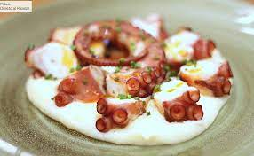
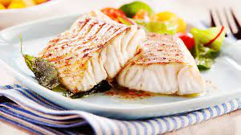
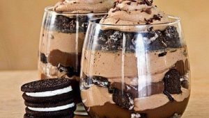
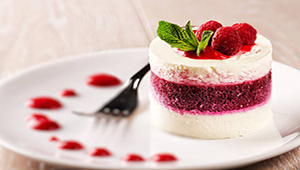

Entrada para 2P (Camarones, chipirones, almejas, pulpo, mejillones)

Pulpo
Pulpo a la Piedra + Arroz con Bogavante (para 2 pers.) + Botella de Albariño Casero + 2 Postres de la Casa

Merluza
Lomo de Merluza al horno o a la plancha acompañado con papas rusticas o ensalada
Postres

Oreo Cheese Cake
Clásica Cheese Cake con base de tarta y acompañada de salsa de frutillas moras y arándanos.
¡Muy cremosa!
Rinde de 10 a 14 porciones.

Tarta
La clásica tarta de manzana: Masa de tarta, manzana fileteada, nueces, pasas, canela y un tope de avena.
¡Deli para comer fría o caliente!
Tarta rellena de moras
¡Muy pero muy rico! Base de masa de tarta relleno de moras y arándanos naturales y un tope de crumble por arriba.
Para cualquier hora y para darte un gusto cuando quieras. Ideal para quienes les gusta un toque ácido.